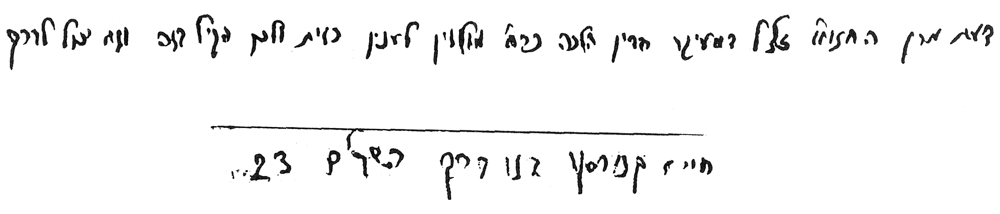

בס"דה' אלול תשנ"א
לכבוד הגאון הגדול, רבי חיים קנייבסקי שליט"א.
א. בספר סידור פסח כהלכתו (עמ' קמ"א) כתב הרה"ג שלמה זלמן גרוסמן שליט"א בשם כת"ר, שהגאון החזו"א זצ"ל היה לוקח מרור בנפח של שליש ביצה, דהיינו נפח של כשבעה עשר סמ"ק, והיה מיקל כן גם לאחרים. ע"כ. והיה נראה לענ"ד, שאם אכן כך, הרי שטעמו כיון שמרור בזה"ז הינו מדרבנן, ואינו אלא לזכר להלל. ועוד, כיון שלדעת הגאון החזו"א זצ"ל איסור ברכה לבטלה הינו ג"כ איסור דרבנן [וכמ"ש מר אביו זצ"ל של כת"ר שליט"א, בספרו שיש"ת בהקדמה בשם החזו"א פסחים (סס"י כ"ה)]. ולכן סבר שבענין מרור א"צ להכפיל השיעורים [וכמש"כ בקונטרס השיעורים לחזו"א (סקט"ו), שיש לכפול השיעורים רק לחומרא, ובדברים של דאורייתא. וכ"כ בספר מידות ושעורי תורה, להרה"ג חיים באניש שליט"א (עמ' ל"ה ורע"ט), בשם כת"ר שליט"א, שהגאון חזו"א זצ"ל כתב להכפיל השיעורים מחומרא בלבד, אבל מעיקר הדין סבר שא"צ להכפיל שיעור הכזית]. וזאת בצירוף דעת הרמב"ם ששיעור כזית כשליש ביצה, ולא חצי ביצה כשיטת התוס' ודעימיה, הרי שאם ניקח ביצה בשיעור הקטן שהיא כחמישים סמ"ק לערך, ונחלק לשלושה חלקים, עולה ששיעור כזית כשבעה עשר סמ"ק [וכמבואר בקונטרס השיעורין (או"ח סי' ל"ט סקי"ז), שנראה שם שלדעת הגאון חזו"א זצ"ל כזית הוי כשליש ביצה. ולא כמש"כ שם (בסי' ק' ס"ק ו' וז'), שכזית הוי כחצי ביצה. וכבר עמד ע"כ בשיש"ת (סי' י"א)].
אלא שבאמת היה קשה לי ע"כ. שהרי מרן הח"ח בספרו המ"ב (סי' תפ"ו סק"א) כתב שאף במרור שהוא דרבנן אין להקל לכתחי' ליקח כזית בשיעור שליש ביצה, אלא דכיון שיש לברך עליו, צריך לכתחי' להחמיר וליקח כזית בשיעור הגדול של חצי ביצה, אא"כ הוא אדם חלש וקשה לו. ועוד: אף אם נאמר שאיסור ברכה לבטלה הינו איסור דרבנן [וכנ"ל, כמש"כ בשיש"ת. ולא כמ"א (סי' רט"ו), ועוד אחרו' רבים, כמבואר בשו"ת יביע אומר (ח"א עמ' קל"ד, ח"ה סי' מ"ג סק"ד ועוד)], האם לכן נתיר בקום ועשה לברך ברכה שי"א שהיא לבטלה, כיון שלשיטת התוס' לא אכל כזית מרור (מבלי להכנס למחלו' אי בעי שיעור כזית למרור). הרי קיי"ל ספק ברכות להקל, ובפרט שמרן המ"ב פסק לא כך.
לכן אבקש מכת"ר שליט"א, שיורנו אם אכן נכונה השמועה שהגאון חזו"א זצ"ל היה מורה לאחרים, אף בריאים שאין קשה להם, ליקח מרור בשיעור 17 סמ"ק בלבד, ולברך ע"כ "על אכילת מרור", ואם אכן כך, מה טעמו בזה [ויש להעיר, דלפי מש"כ בשיש"ת (סס"י י"א) משמע, שלמי שלא קשה עליו אכילת כזית גדול, אכן צריך לכתחי' לאכול אף במרור שיעור כזית גדול. ואם לאו, יכול להקל עד שיעור כזית של זמננו. ואם אכן היקל הגאון החזו"א זצ"ל גם לאחרים, ומשמע אף לבריאים, והורה שדי ב17- סמ"ק, א"כ מדוע לא הורה להם השיעור הגדול].
ב. צר לי שמטריח אני את כת"ר, אך עוד שאלה קטנה לי: האם כוונת הגאון המחבר בספר שיעורין של תורה (סס"י י"א), שבמרור שבזה"ז הינו דרבנן, "ודאי מי שקשה עליו אכילת כזית גדול, יכול לסמוך על הוראות הגר"ח ז"ל מוואלאזין, ולשער בכזית של זמננו שהוא לכל היותר כשליש ביצה של זמננו" (וכ"כ האב"נ זצ"ל). האם הכוונה דגם רשאי לברך "על אכילת מרור" אם אוכל מרור בשיעור כזית של זמננו, ולא יותר. שכן משמע מסתימת דברי הגאון המחבר זצ"ל. או שנאמר שאין כוונתו גם לענין הברכה, וגם פה נאמר סב"ל.
אודה לכת"ר שליט"א אם יטרח להשיבני במהרה על דברי, כיון שעוסק אני בכתיבת קונטרס בעניני הפסח, והדברים אינם מיושבים אצלי דיים כדי להורות בזה. ואין שמחה כהתרת הספקות, והמתירן שכמ"ה.
בברכת התורה
משה הררי
ירושלים תובב"א
וזו תשובתו אלינו:

דעת מרן החזו"א זצ"ל דמעיקר הדין הלכה כר"ח מוולוז'ין לענין כזית ולכן הקיל בזה וגם יכול לברך.*
*וראה בספר שיש"ת (סי' י"א עמ' ע"א), בספר שיעו"מ (עמ' ד' בהקדמה), ובספר מוש"ת (עמ' ל"ה ורע"ט). ומדבריהם עולה ששיעור זה הינו כשיעור זית רגיל בזמננו.